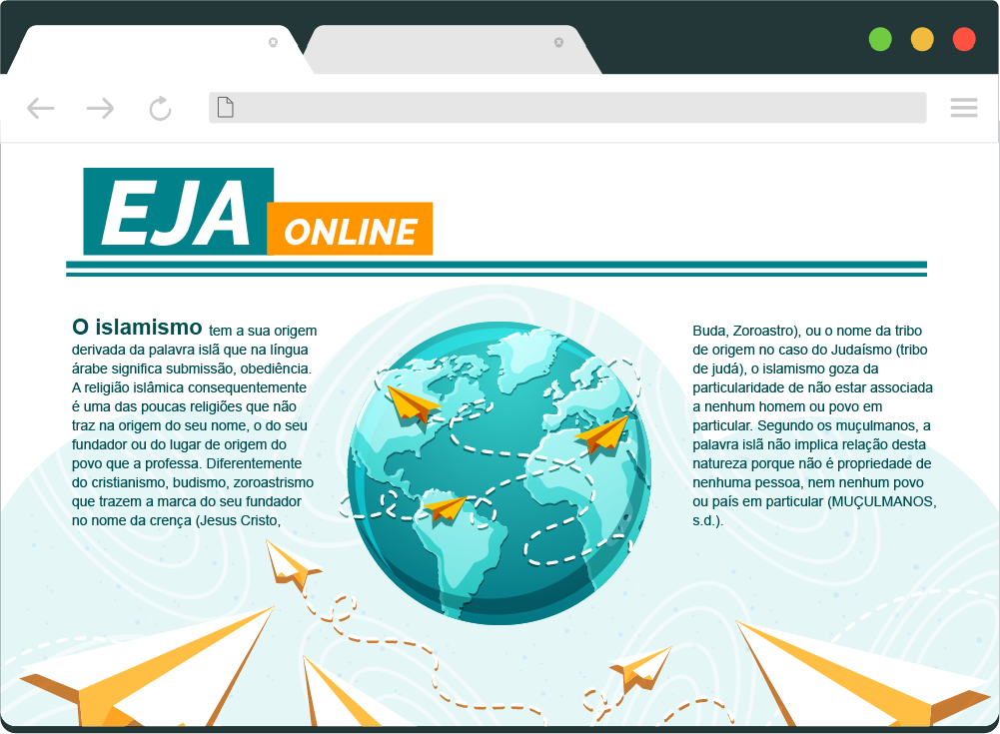
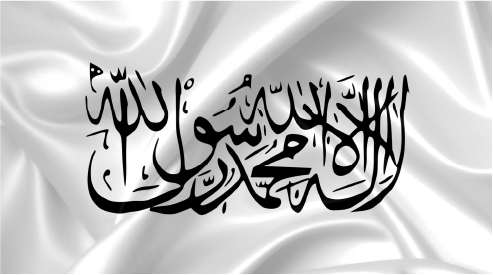
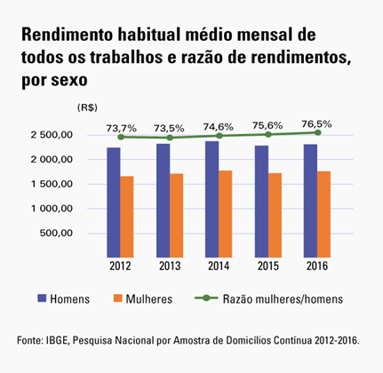
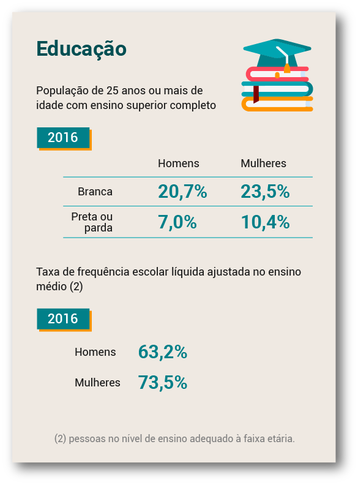
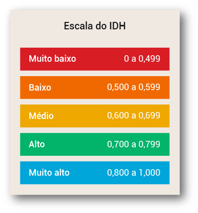
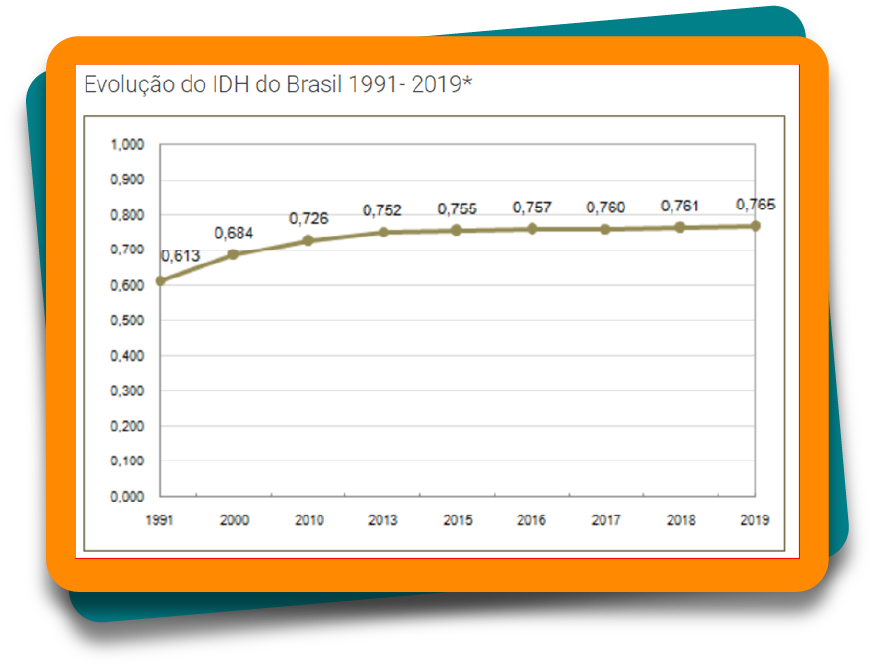

A Ásia é o maior continente do mundo, tanto por sua extensão territorial quanto por sua população absoluta . É composta por 50 países, tendo uma vasta diversidade cultural, étnica e religiosa. É comum pensar que esse continente é único, que os asiáticos são todos parecidos, com características físicas em comum, como os olhos e a cor de pele, que comem comidas exóticas , como insetos, que todos os indivíduos seguem a mesma religião e tem avanço tecnológico muito superior ao do Brasil.
Entretanto, assim como na América, esse continente tem características bem específicas, conforme o país ou a região analisada. É necessário visualizar esses países para entender um pouco mais sobre a região estudada neste tópico.
No mapa a seguir, é possível visualizar o continente asiático e seus países: Afeganistão, Arábia Saudita, Armênia, Azerbaijão, Cazaquistão, Catar, China, Coreia do Norte, Coreia do Sul, Emirados Árabes, Filipinas, Geórgia, Iêmen, Índia, Indonésia, Irã, Iraque, Israel, Japão, Jordânia, Líbano, Malásia, Mongólia, Nepal, Paquistão, Rússia, Síria, Sri Lanka, Tajiquistão, Tailândia, Turquia, Vietnã e uma parte do Egito.

Figura 2 – Mapa-múndi com destaque para o continente asiático
Fonte: Mendão (s.d.)
Ilustração de parte do mapa do mundo, com destaque colorido para os países que fazem parte do continente asiático, como Rússia, Cazaquistão, Mongólia, China, Índia, Arabia Saudita, Turquia, Irã, Indonésia, Malásia, Filipinas, Indonésia, Irã, Iraque, Israel, Japão, Jordânia, Líbano e Nepal.
Dessa forma, será estudada a localização do Oriente Médio no continente asiático, visto que este módulo foi iniciado com a violação dos direitos das mulheres no mundo, principalmente em países do Oriente Médio, que figuram como os maiores violadores desses direitos.
O Oriente Médio recebe esse nome por sua localização estratégica, entre o continente africano e o europeu, dividindo o mundo entre o oriente e o ocidente . Os países que estão nessa região são: Afeganistão, Arábia Saudita, Barein, Catar, Emirados Árabes Unidos, Egito, Iêmen, Irã, Iraque, Israel, Jordânia, Kuwait, Líbano, Omã, Síria e Turquia. Clique sobre o mapa a seguir e veja essa região do globo terrestre.
Figura 3 – Mapa do Oriente Médio
Fonte: Toda Matéria (c2011-2022)
Ilustração de um mapa com parte da África, Ásia e Europa, com destaque colorido para os países que formam o Oriente Médio, como Arábia Saudida, Afeganistão, Irã, Iêmen, Jordânia, Turquia, entre outros.
A diversidade étnica , religiosa e política é muito presente no Oriente Médio. Os grupos étnicos são formados principalmente por turcos, persas, hebreus, árabes e curdos . Dessas etnias, os árabes têm a maior população absoluta e ocupam a maior área, com uma cultura independente de religião, podendo ser muçulmanos, cristãos, judeus etc.
No mapa, a seguir, alguns países estão com territórios coloridos. Estes se localizam em uma região entre o Oriente Médio, na Ásia, e a África, principalmente na parte norte do continente. Todos que estão em destaque têm, em sua maioria, povos árabes, compondo o mundo árabe. Clique aqui e veja os países que são predominantemente árabes.
Figura 4 – Países com população formada por maioria árabe
Fonte: Bezerra (c2011-2022)
Ilustração de um mapa com parte da África, Ásia e Europa, com destaque colorido para os países que formam o Oriente Médio, como Arábia Saudida, Afeganistão, Irã, Iêmen, Jordânia, Turquia, entre outros.
Árabes e mulçumanos são dois grupos distintos. Os mulçumanos são vinculados à religião Islã, e os árabes são um grupo étnico. Veja, a seguir, uma breve explicação sobre essa religião, conforme o site Observatório, da Unicap.
O islamismo tem a sua origem derivada da palavra islã que na língua árabe significa submissão, obediência. A religião islâmica consequentemente é uma das poucas religiões que não traz na origem do seu nome, o do seu fundador ou do lugar de origem do povo que a professa. Diferentemente do cristianismo, budismo, zoroastrismo que trazem a marca do seu fundador no nome da crença (Jesus Cristo, Buda, Zoroastro), ou o nome da tribo de origem no caso do Judaísmo (tribo de judá), o islamismo goza da particularidade de não estar associada a nenhum homem ou povo em particular. Segundo os muçulmanos, a palavra islã não implica relação desta natureza porque não é propriedade de nenhuma pessoa, nem nenhum povo ou país em particular (MUÇULMANOS, s.d.).
Uma característica desse território é que, em alguns países, existe uma junção de política com religião, quando um grupo étnico sobrepõe suas ideologias religiosas perante as leis e o regime de seu país. Nesses casos, tem-se um estado fundamentalista, com as regras e as normas estabelecidas, nesses países, vinculadas às regras religiosas. Sua Constituição Federal é uma fusão de códigos religiosos com regras sociais e políticas, formando as leis da sociedade.
Um exemplo de estado fundamentalista é o grupo extremista que comanda o Afeganistão, o Talibã , que tem regras severas, principalmente em relação às mulheres, como a utilização da burca (uma vestimenta que cobre as mulheres da cabeça aos pés, deixando somente os olhos à mostra).
No tópico a seguir, você verá como o Oriente Médio trata questões relacionadas aos direitos humanos, ao acordo internacional estabelecido pela ONU e como vivem as mulheres dessa região. Dessa forma, será aprofundado o fenômeno social iniciado neste módulo, sobre a violação dos direitos das mulheres no mundo, trazendo você, estudante, para uma reflexão sobre o Brasil também.
Estudante, na primeira etapa de Ciências Humanas e Sociais Aplicadas, um dos objetivos foi entender como se estabeleceu no mundo o acordo sobre os direitos humanos universais. Esses direitos foram instituídos pela Organização das Nações Unidas (ONU), com o objetivo de respeitar e zelar pelos direitos básicos das nações.
Em uma das conferências realizadas pela ONU, no ano de 2010, na cidade de Nova Iorque, foi estabelecida a ONU Mulheres, com os objetivos de garantir, unir, fortalecer e defender os direitos básicos das mulheres no mundo. Dessa forma, a ONU firma os seguintes 12 direitos das mulheres.
Esses direitos são acordos estabelecidos entre os países nas conferências que ocorrem anualmente. Mas, como citado na reportagem do início deste módulo, há países que ainda não garantem esses direitos e que, até mesmo, não assinam os acordos estabelecidos. A região do Oriente Médio está no ranking dos piores países do mundo para mulheres, conforme o índice de igualdade de direitos e o índice de violência contra a mulher, segundo dados da ONU. No topo da lista, estão os seguintes países, divulgados pelo site de notícias G1: Afeganistão, Síria, Iêmen, Paquistão e Iraque. A lista tem um ranking com 10 países com elevado índice de injustiças e falta de direitos, assim como 10 países com igualdade de gênero. O Brasil está na 80º (octogésima) posição dos países com igualdade de gênero, no topo da lista de igualdade, estão a Noruega, a Finlândia e a Islândia.
Esse estudo mostra que, apesar de todos os esforços mundiais para garantir o mínimo de direitos, ainda há culturas e regiões do mundo onde a realidade para as mulheres está longe de ser igualitária. Existem mulheres que sofrem mutilações genitais, risco de morte durante as gestações, risco ao andar sozinha pelas ruas, violência doméstica, imposições de religião e política.
Entretanto, há diversas mulheres que lutam por esses direitos, que são negados ao longo da história. Conheça, a seguir, duas personagens importantes nessa luta, suas histórias e por quais direitos lutam, clicando sobre os cards.
Após conhecer essas duas importantes mulheres na jornada pela igualdade de gênero, sabe-se que muitas conquistas ocorreram devido a lutas femininas ao redor do mundo. Isso se deu pela participação e efetivação das mulheres na política e na sociedade como um todo. Quando há representantes femininas, com uma participação ativa desse grupo na luta por igualdade, as chances de leis e mudanças sociais e culturais ocorrerem é maior.
Outro exemplo da importância da participação das mulheres no mundo se materializou no âmbito público, no ano 1893, na Nova Zelândia, quando ocorreu a participação das mulheres no voto. Já no Brasil foi somente a partir de 1932 que as mulheres começaram a ter esse direito.
Em relação à luta pelos direitos das mulheres, é necessário compreender que estão sendo abordados direitos universais. Isso significa que, em muitas regiões do mundo, como no Brasil, existe uma diversidade cultural e realidades distintas. Mas quando são abordados os direitos femininos, há semelhanças, como a violação de direitos ou a falta desses.
A seguir, as imagens demonstram essas diversidades, seja no Brasil, com etnias diversas, como as mulheres indígenas, que há pouco tempo começaram a participar da política, seja no Oriente Médio, onde as mulheres têm vestimentas típicas e representações culturais. Clique ou toque nas setas para visualizá-las.
Neste tópico, você estudou sociedades e culturas que estão distantes do Brasil no globo, como o Oriente Médio, porém, mesmo tão distante, com religiões e etnias diversas, podem ter semelhanças no cotidiano. Principalmente quando são abordados assuntos como os direitos individuais das mulheres, pois, ao viajar para outros continentes, é possível encontrar semelhanças na luta das mulheres por direitos, como participação política, fim da violência física e emocional, entre tantas outras questões em comum.
Dica! Caso você tenha interesse em assistir a um documentário filmado na Ásia sobre os direitos das mulheres a condições básicas de saúde e higiene e como elas se organizaram para conquistar esses direitos, acesse as plataformas de vídeos on-line e procure pelo título “Absorvendo tabu”. Na internet, você também poderá encontrar diversas entrevistas da Malala Yousafzai, seu discurso na ONU, breves documentários sobre sua vida etc. Também é possível encontrar diversos filmes e documentários que abordam a temática dos conflitos e guerras na região do Oriente Médio.
Nos tópicos a seguir, você estudará como a formação da política e o surgimento dos poderes se relacionam e podem percorrer os direitos mínimos alcançados pelas mulheres. Afinal, é importante entender que, mesmo no campo da política, em que as mulheres foram excluídas e proibidas de participar, a presença delas ao longo da história continua sendo fundamental para que sigam buscando uma sociedade igualitária e justa.
Sobre aspectos socioeconômicos, é possível correlacioná-los à política, visto que ela permeia assuntos como desenvolvimento social, educação, economia e igualdade, como visto anteriormente.
Para iniciar os estudos sobre as características socioeconômicas do Brasil e do mundo, de maneira geral, é importante falar do tema tratado anteriormente, que diz respeito à participação das mulheres na sociedade. Para tanto, serão analisados os dados de escolaridade e renda, apontando as diferenças de gênero.
De acordo com o IBGE, no ano de 2018, as mulheres trabalharam, em média, três horas por semana a mais do que os homens, combinando trabalhos remunerados, afazeres domésticos entre outras atividades. Mesmo assim e ainda contando com um nível educacional mais alto, elas ganham, em média, 76,5% do rendimento dos homens.
Observe o gráfico a seguir.

Figura 13 – Gráfico do rendimento mensal por sexo
Fonte: Peret (2019)
Gráfico com o título “Rendimento habitual médio mensal de todos os trabalhos e razão de rendimentos, por sexo”. Abaixo, o gráfico de 2012 a 2016, apontando que os homens têm rendimento maior que as mulheres, com variação de renda de 500,00 a 2.500,00.
O gráfico mostra a renda de homens e mulheres entre 2012 e 2016, em que houve leve redução da diferença de renda, mas, mesmo assim, os homens continuam com a renda maior. Ainda segundo o IBGE, a renda média dos homens é R$ 2.306 e das mulheres R$ 1.764, mesmo com uma carga horária superior de horas trabalhadas e maior escolaridade. Essa taxa superior de escolaridade das mulheres com relação aos homens ocorre tanto no ensino médio quanto na educação superior.
Observe a imagem a seguir.

Figura 14 – Educação da população de 25 anos ou mais com ensino superior completo
Fonte: IBGE (2018)
Ilustração mostrando os percentuais da população de 25 anos ou mais de idade com ensino superior completo, em 2016. As mulheres se destacam por serem a maioria também na taxa de frequência escolar líquida ajustada no ensino médio.
A população do Brasil, de 25 anos ou mais, com ensino superior completo é de 33,9% de mulheres e 27,7% de homens. Além da diferença de renda, há outra diferença de gênero, no que diz respeito à escolaridade. No Brasil, as mulheres, em média, têm mais anos de estudo que os homens, trabalham mais e ainda ganham menos. Existem diversos estudos sobre essa problemática de gênero que envolve as mulheres, pois mesmo com mais escolaridade e trabalhando mais horas, ainda ganham menos.
De acordo com o pesquisador Carneiro (2018), que utiliza o termo teto de vidro (glass ceiling) para abordar esse fenômeno envolvendo a diferença de gênero no Brasil, esse é um fenômeno social partindo de barreiras culturais organizacionais, familiares e individuais, dificultando o acesso das mulheres a posições de liderança e equiparação salarial, mesmo com maior escolaridade e mais horas trabalhadas. Existem outras formas de quantificar e analisar os aspectos socioeconômicos das populações além dos aspectos mencionados, como educação, renda e saúde, abrangendo a população como um todo. Os principais índices que serão destacados nesse estudo são o Índice de Desenvolvimento Humano e o Índice ou Coeficiente de Gini, conhecidos e utilizados mundialmente. Veja esses índices clicando nos botões a seguir.
Esse índice foi criado no ano de 1990 e é divulgado anualmente desde 1993 pelo Programa das Nações Unidas para o Desenvolvimento (PNUD). O Índice de Desenvolvimento Humano (IDH) é uma forma de medir o grau de desenvolvimento de regiões resumidamente, por meio de determinados dados para essa classificação, como:
O IDH varia em uma escala de 0 a 1. Quanto mais próximo de 1, maior o desenvolvimento humano. Dependendo do valor que determinado local obtiver, pode ser classificado em escalas. Observe a imagem a seguir.

Figura 15 – Escala de Indicação de nível de IDH
Fonte: Secretaria de Planejamento, Orçamento e Gestão (2022)
Ilustração contendo as faixas do Índice de Desenvolvimento Humano (IDH). Na escala de 0 a 0,499, o desenvolvimento é muito baixo; de 0,500 a 0,599, o desenvolvimento é baixo; de 0,600 a 0,699, é médio; de 0,700 a 0,799, é alto; e de 0,800 a 1,000, é muito alto. A maioria está dentro da escala de IDH muito baixo.
Ao observar a imagem, é possível constatar que existe um intervalo de escala classificando determinado local a partir do IDH obtido. Esse cálculo pode ser feito em diferentes escalas, como continentes, países, estados, cidades, bairros etc. Agora será observado o IDH de 1991 até 2019, em que se pode perceber um crescimento significativo no país, passando de um nível médio, nos anos 2000, para um nível alto, até o ano de 2019. Observe o gráfico.

Figura 16 – Evolução do IDH no Brasil de 1991 a 2019
Fonte: IBGE (2022)
Gráfico da evolução do IDH do Brasil, no período de 1991 a 2019. Em 1991, o IDH do Brasil foi de 0,613. Em 2000, de 0,684. Em 2010, de 0,726. Em 2013, de 0,752. Em 2015, de 0,755. Em 2016, de 0,757. Em 2017, de 0,760. Em 2018, de 0,761. Em 2019, de 0,765.
Com relação aos demais países do mundo, é possível elencar os com maiores e menores Índices de Desenvolvimento Humano, constatar e analisar a classificação do Brasil a partir de um cenário mundial. Observe o mapa que contempla o IDH da maior parte dos países do mundo.

Figura 17 – Mapa-múndi do Índice de Desenvolvimento Humano
Fonte: World Population Review (c2022)
Mapa mundial do Índice de Desenvolvimento Humano por país no ano de 2022. Os dados demonstrados no mapa indicam por cor a classificação dos países de acordo com o resultado do seu IDH. Os melhores índices são em países como Canadá, Estados Unidos, Austrália, Nova Zelândia, Japão, Coreia do Sul e no continente europeu. Os índices medianos se estabelecem em locais da América Latina, Oceania e Ásia, em países como China e Índia. Os índices mais baixos são predominantemente no continente africano.
Os dados demonstrados no mapa indicam por cor a classificação dos países de acordo com o resultado do seu IDH. O Brasil se enquadra na classificação de cores entre os valores de 0,75 e 0,8, com o valor de IDH de 0,761, de acordo com a World Population Review, estando na classificação mundial em 84° lugar.
Com relação aos outros países, destacam-se a primeira e a última posição do ranking, onde encontra-se o melhor IDH do mundo, na Noruega, com o valor de 0,957, e o pior, em Níger, com o valor de IDH de 0,394. Como citado anteriormente, outro índice importante a ser estudado é o Índice de Gini, que mede a concentração de renda das populações e serve de base para as tentativas de mitigar esse problema.
Através destes principais índices estudados, IDH e Índice de Gini, podemos entender um pouco mais a questão de gênero e aspectos socioeconômicos, como saúde, educação e concentração de renda. Constatamos também que a mulher, mesmo com mais estudo e com mesma profissão, possui menor salário em comparação aos homens, assim como a menor parte da população mundial detém a maior riqueza, sendo então uma sociedade globalmente desigual.